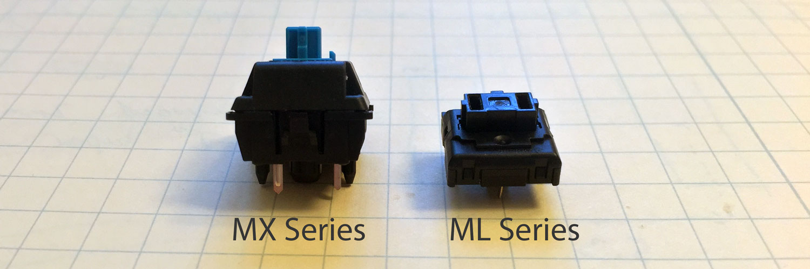
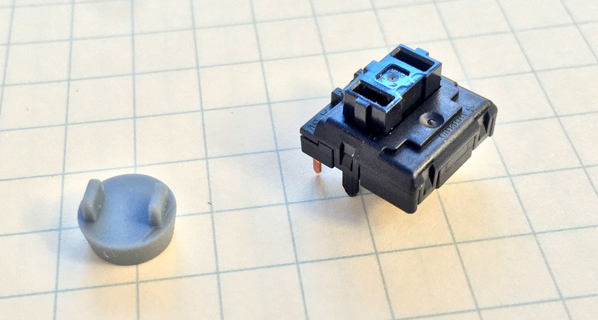
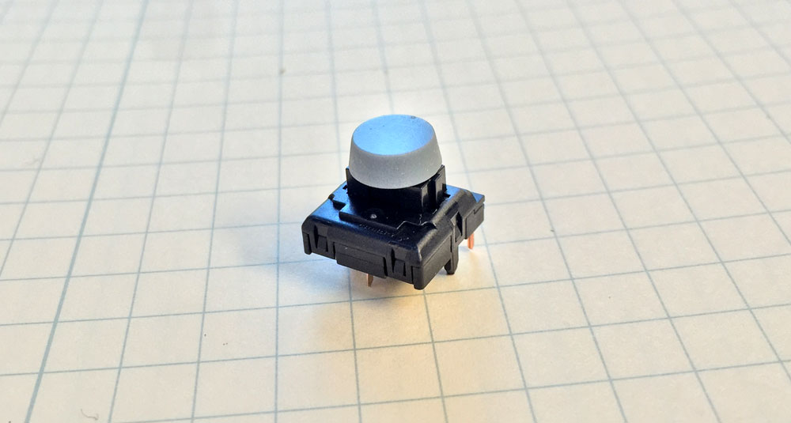

Keyboard Science with Cherry MLs
I was recently inspired by a post / rallying call to “blog little things.” So after failing to find detailed information on the Cherry ML pushbutton switch, I’ve decided to publish all my measurement notes in the hopes that it will be helpful to someone else.
The Switch
With mechanical keyboards being all the rage, most enthusiasts are familiar with the Cherry MX series of pushbutton switches. Less known, however, is Cherry’s ML series of low-profile switches, meant for laptops or other space-constrained designs. At 6.9mm total board height, it’s less than half the height of a 15.6mm MX switch.

- Travel Distance: 3mm
- Force: 45 cN
- Bounce Time: 5ms
- Current Rating: 10mA
The ML switch is technically a “family” of switches, but there’s really only one ML part readily available, the ML1A-11JW. Fortunately, this variant is widely available in single quantities, making it decent for hobbyist use.
The best description I’ve heard for the tactile “feel” of an ML switch is that it’s like a Cherry MX Blue, but “scratchier.” While preference for a particular switch is mostly dependent on the eye of the beholder, I think these switches feel great in my application: a fully mechanical controller (if you’re interested, follow me on twitter for updates!)
Unfortunately, Cherry’s official datasheets are frustratingly bare and underannotated, especially in regards to mechanical features, which makes it difficult to use in designs. I will try to elucidate some of the missing information below.
Schematic

The J in the part number stands for Jumper, meaning that two of the pins are just shorts to each other. However, it isn’t clear on exactly which ones they are out of the four. I’ve redrawn the footprint with an actual schematic symbol to make it clear that pins 2 and 4 are the actual switch, while 1 and 3 serve as a jumper wire.
Mechanical Dimensions

While the MX series has the mounting post on the switch, the ML switch instead has slots that the keycaps insert into. The exact dimensions and spacing of the hole are unclear, so I have filled them out here. These are the dimensions to the best of my knowledge (and the tolerance of my calipers).
The actuator is directly centered over the bottom mounting post, with two 3.1mm x 1.1mm slots separated 5.3mm apart. It is important to note that the large bottom mounting post is not in the center of the switch; it’s only 5mm down the edge of the full 11.4mm length. I’ve exported a very blocky 3D STEP file out for visualization use while working in your favorite EDA package.
Keycap Test
To check my measurements, I designed a small button cap with 3 x 1mm mounting posts as a test.

The button yielded a reasonable fit after printing it out on an SLA 3D-printer.

It may be possible to increase the size of the mounting post a bit to make the fit tighter, but so far I’m pretty happy with how it turned out.

Final Thoughts
I’ll try to make this a “living” blog post in that I’ll periodically update it with more accurate measurements and models as I make them – feel free to check back for the latest information. At some point I plan to take the keycap apart and optically scan and measure each piece, but for now the above is sufficient for my purposes.
Also, if there’s anyone out there with better measurements or models, please feel free to reach out to me either through twitter or email so I can correct my drawings!
Changelog
- 5/11/2016: Initial Posting